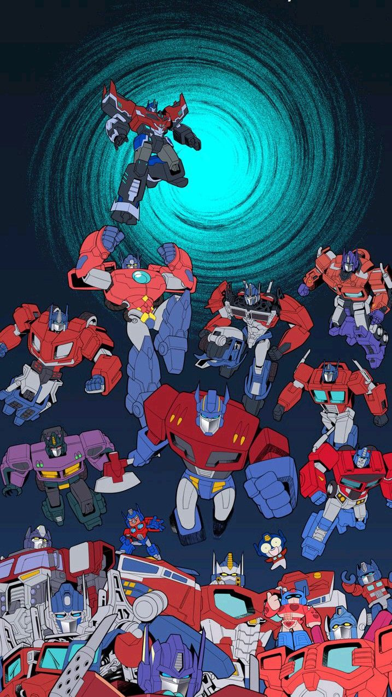

Transformers tiene múltiples universos
Uno de los aspectos más fascinantes de Transformers es que no se limita a una sola línea temporal o narrativa. A lo largo de las décadas, la franquicia ha creado múltiples universos, desde la generación original (G1) hasta Beast Wars, Transformers: Armada, Prime y más. Cada uno ofrece versiones distintas de los personajes y sus conflictos.
Esta estructura de multiverso permite experimentar con orígenes alternativos, rediseños visuales y nuevas alianzas. Por ejemplo, en Beast Wars, los Transformers adoptan formas de animales en lugar de vehículos, mientras que en Armada se introduce el concepto de los Minicons. Cada serie tiene su propio tono, desde lo épico hasta lo humorístico.
El uso del multiverso en Transformers también ha sido explorado en los cómics, con cruces entre versiones y eventos que afectan a más de una realidad. Esta riqueza narrativa mantiene la franquicia fresca y atractiva tanto para los fans veteranos como para nuevas generaciones.
← Volver a curiosidades de Transformers